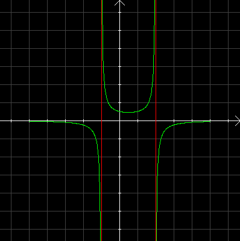

| Choisissez votre langue ! | Choose your language ! |
Observez la représentation graphique ci-jointe:

Cette courbe représente l'une des 4 fonctions suivantes:
- -1/((x+1)(x+2))
- 1/((x+1)(x-2))
- -1/((x+1)(x-2))
- -1/((x+1)(x-2))+2
aide
Observez les asymptotes.
solution
A cause des asymptotes verticales en x=-1 et x=+2, la réponse ne peut être que 3. ou 4.
Mais 4. a une asymptote horizontale y=2.
C'est donc forcément 3. (On peut aussi le voir avec f(0)=1/2).
Observe the graphic representation attached:
This curve represents one of the following 4 functions:
- -1/((x+1)(x+2))
- 1/((x+1)(x-2))
- -1/((x+1)(x-2))
- -1/((x+1)(x-2))+2
hint
Look at the asymptotes.
solution
Because of the vertical asymptotes at x=-1 and x=+2, the answer can only be 3. or 4.
But 4. has a horizontal asymptote y=2.
It is therefore necessarily 3. (We can also see it with f(0)=1/2).
|
Création Gilles Dubois
Created by Gilles Dubois
|
Janvier 2022
January 2022
|
Version mobile Jquery
Mobile Jquery version
|
|